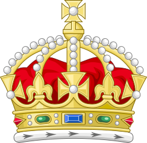

I created this app as a challenge set by myself to practice my Javascript skills. The built a simple one page user interface which allows the user to enter any date (in the format dd/mm/yyy) and then click the button, this will return a string which tells the user who the Monarch, or Monarchs of England were on the given date.
